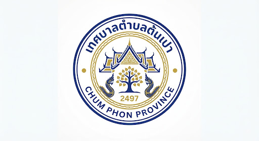

สัมผัสวิถีชีวิต ต้นเปา
แพลตฟอร์มแผนที่ดิจิทัลเพื่อการท่องเที่ยวชุมชนและส่งเสริมหัตถกรรมท้องถิ่น เชื่อมโยงคุณเข้ากับอัตลักษณ์ที่แท้จริงของเทศบาลเมืองต้นเปา
ความเป็นมาและวัตถุประสงค์
โครงการ TonPao Map เกิดขึ้นจากความตั้งใจที่จะยกระดับและเผยแพร่ศักยภาพด้านการท่องเที่ยวชุมชนของเทศบาลเมืองต้นเปา ซึ่งมีชื่อเสียงระดับโลกในด้านหัตถกรรมการทำร่มกระดาษสา (ร่มบ่อสร้าง) และผลิตภัณฑ์จากกระดาษสา
เรามุ่งหวังที่จะสร้างเครื่องมือดิจิทัลที่เข้าถึงง่าย ทันสมัย เพื่อช่วยให้นักท่องเที่ยวทั้งชาวไทยและชาวต่างชาติสามารถค้นพบสถานที่น่าสนใจ ร้านค้าชุมชน แหล่งเรียนรู้งานฝีมือ และกิจกรรมทางวัฒนธรรมได้อย่างไร้รอยต่อ (Effortless Discovery) เป็นการกระตุ้นเศรษฐกิจฐานรากและอนุรักษ์ภูมิปัญญาท้องถิ่นให้ยั่งยืน
วิสัยทัศน์ของเรา
"เชื่อมโยงมรดกทางวัฒนธรรมเข้ากับเทคโนโลยีแห่งอนาคต สร้างแผนที่ดิจิทัลที่มีชีวิตและเติบโตไปพร้อมกับชุมชนเมืองต้นเปา"
ฟีเจอร์เด่นของแพลตฟอร์ม
แผนที่เชิงโต้ตอบ
ค้นหาสถานที่ท่องเที่ยว ร้านอาหาร และจุดน่าสนใจด้วยระบบนำทางที่แม่นยำ
แหล่งหัตถกรรม
รวบรวมข้อมูลแหล่งผลิตร่มบ่อสร้างและกระดาษสา ให้คุณได้สัมผัสวิถีช่างฝีมือ
ปฏิทินกิจกรรม
ไม่พลาดทุกเทศกาลสำคัญและงานประเพณีท้องถิ่นของเทศบาลเมืองต้นเปา
เส้นทางแนะนำ
จัดทริปท่องเที่ยวตามสไตล์คุณ ด้วยเส้นทางที่คัดสรรมาอย่างดี
สนับสนุนโดย
โครงการนี้ได้รับความร่วมมือและการสนับสนุนอย่างเป็นทางการจาก เทศบาลเมืองต้นเปา เพื่อผลักดันการท่องเที่ยวดิจิทัลระดับท้องถิ่นให้เป็นรูปธรรม

เทศบาลเมืองต้นเปา
อ.สันกำแพง จ.เชียงใหม่
ติดต่อเรา ข้อมูลตัวอย่าง
ที่อยู่ เบอร์โทร และอีเมลด้านล่างเป็นข้อมูลตัวอย่าง ยังใช้ติดต่อจริงไม่ได้
-
location_on
สำนักงานเทศบาลเมืองต้นเปา เลขที่ 333 หมู่ 6 ต.ต้นเปา อ.สันกำแพง จ.เชียงใหม่ 50130
- call 053-338-048
- mail info@tonpao.go.th